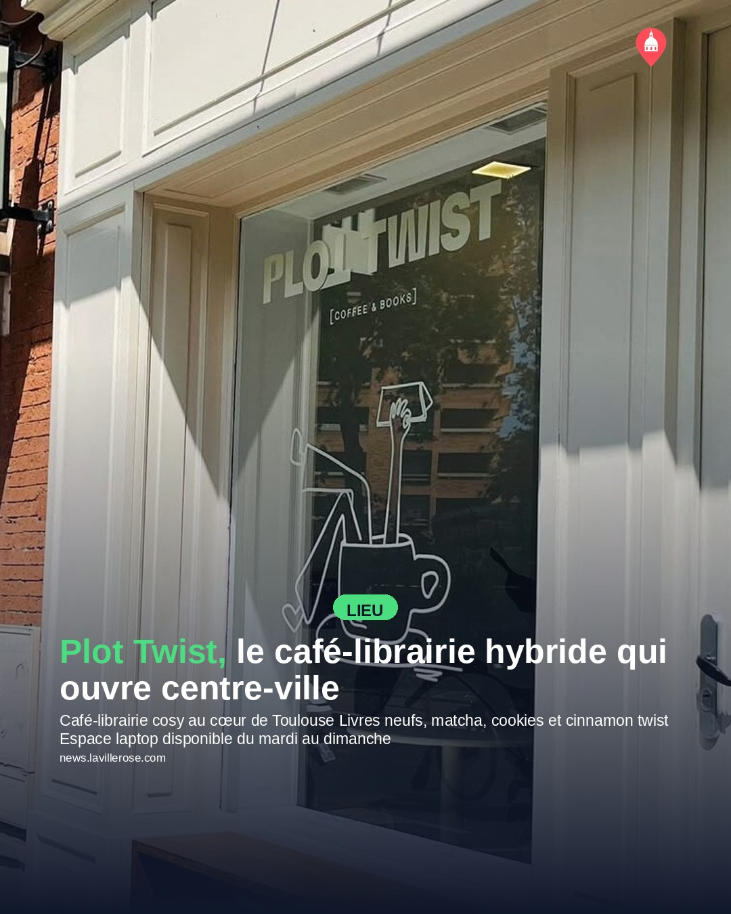
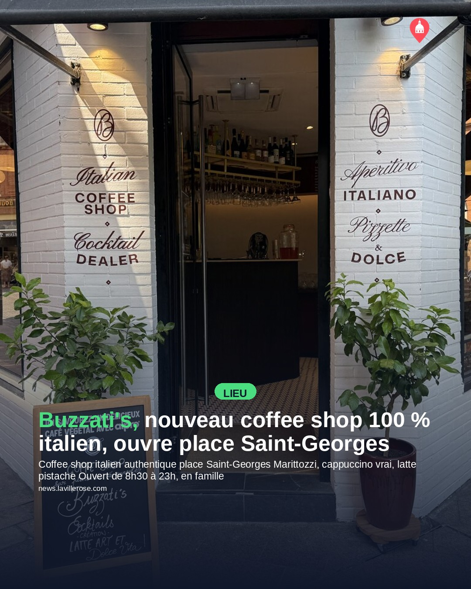
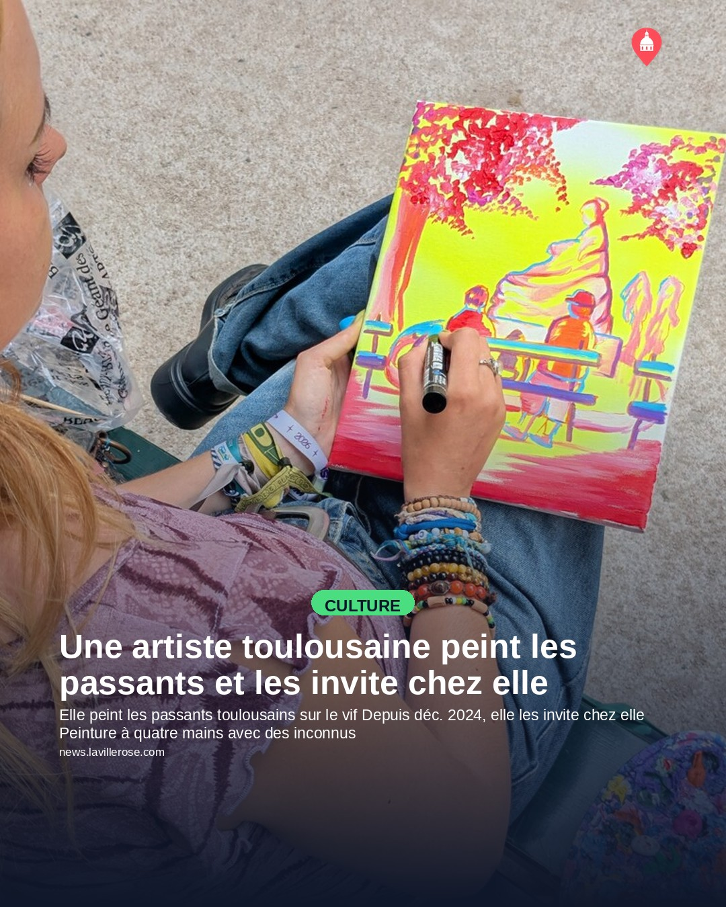
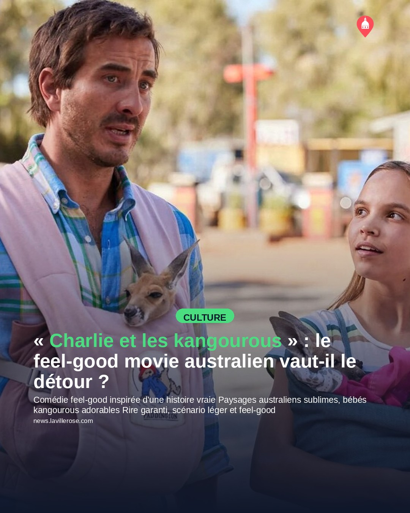
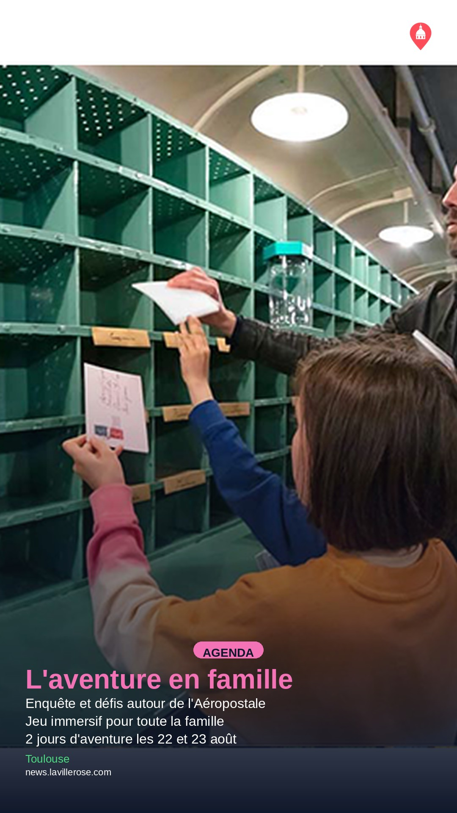
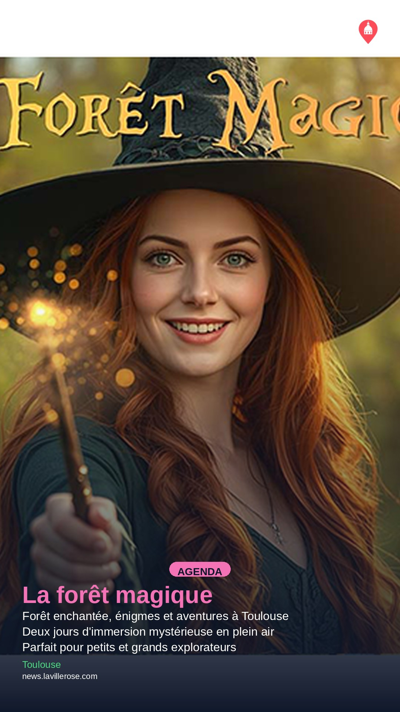
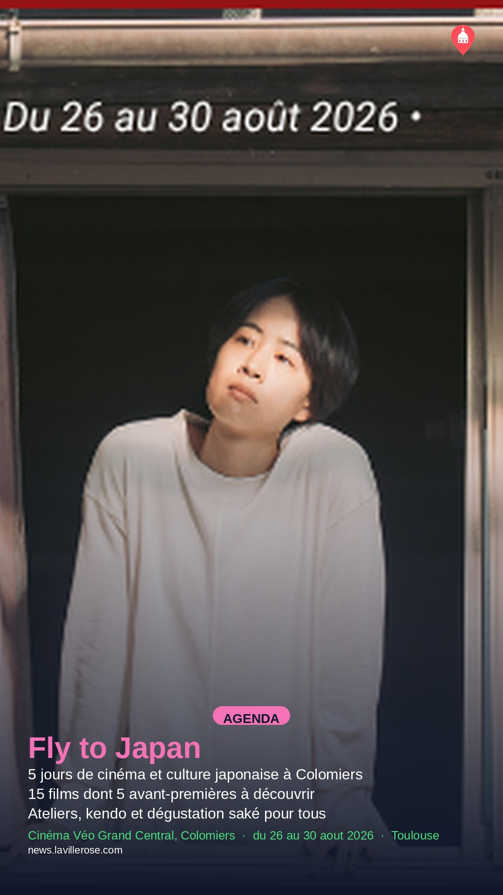
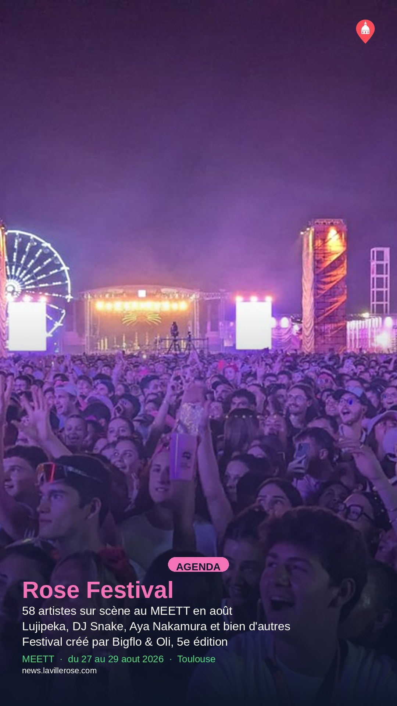

Feed post (4)

Plot Twist, le café-librairie hybride qui ouvre centre-ville
Texte sur l'image
Café-librairie cosy au cœur de Toulouse
Livres neufs, matcha, cookies et cinnamon twist
Espace laptop disponible du mardi au dimanche
Légende publiée
Un endroit comme on en rêvait : Plot Twist réunit café de spécialité et librairie dans un même espace intimiste rue d'Aubuisson. Fondé par Justine et Thibaut, le lieu propose des boissons originales — ube, matcha, chaï — accompagnées de gourmandises maison, le tout à déguster en commençant un roman tout neuf. Tous les livres sont disponibles uniquement à l'achat, et un coin laptop accueille aussi les télétravailleurs en quête d'une ambiance chaleureuse. Ouvert du mardi au vendredi de 8h30 à 17h30, et le week-end de 9h à 17h — l'adresse idéale pour une pause culturelle et gourmande.
Modifier sur GitHub →

Buzzati's, nouveau coffee shop 100 % italien, ouvre place Saint-Georges
Texte sur l'image
Coffee shop italien authentique place Saint-Georges
Marittozzi, cappuccino vrai, latte pistache
Ouvert de 8h30 à 23h, en famille
Légende publiée
Une nouvelle adresse italienne s'installe place Saint-Georges : Buzzati's, coffee shop fondé par la fratrie Satragnio, déjà à la tête des restaurants Marcello. Le concept ? Redonner au café italien ses lettres de noblesse à Toulouse — cappuccino en trois doses égales, marittozzi fourrés à la chantilly, latte macchiato à la pistache. Ouvert dès 8h30 et jusqu'à 23h, l'endroit se prête aussi bien au café du matin qu'à une pause sucrée en soirée. Les deux terrasses (Marcello et Buzzati's) sont partagées, pour une ambiance italienne assumée en plein cœur de Toulouse.
Modifier sur GitHub →

Une artiste toulousaine peint les passants et les invite chez elle
Texte sur l'image
Elle peint les passants toulousains sur le vif
Depuis déc. 2024, elle les invite chez elle
Peinture à quatre mains avec des inconnus
Légende publiée
À Toulouse, l'artiste Aestcart a troqué l'appareil photo contre les pinceaux pour immortaliser la vie de la rue : couples main dans la main, danseuses de flamenco, musiciens, flâneurs au bord de la Garonne. Ce qui rend sa démarche unique, c'est qu'elle va parfois chercher ses sujets directement dans la rue pour les convier chez elle à peindre ensemble — une expérience de création partagée avec de parfaits inconnus, lancée en décembre 2024. Ses toiles aux couleurs vives racontent autant la ville que sa propre vie : les endroits qu'elle fréquente, les heures auxquelles elle sort, les instants qui l'émeuvent. Un beau portrait d'une artiste toulousaine qui fait de la Ville rose son atelier à ciel ouvert.
Modifier sur GitHub →

« Charlie et les kangourous » : le feel-good movie australien vaut-il le détour ?
Texte sur l'image
Comédie feel-good inspirée d'une histoire vraie
Paysages australiens sublimes, bébés kangourous adorables
Rire garanti, scénario léger et feel-good
Légende publiée
Envie de légèreté au cinéma cet été ? « Charlie et les kangourous » mise sur une histoire vraie improbable : un présentateur météo raté, un bébé kangourou orphelin et une jeune militante décidée à changer les choses. Le film se distingue par ses longues séquences en plein air dans des paysages australiens époustouflants et par le soin extrême apporté aux animaux sur le tournage. Sans être un chef-d'œuvre scénaristique, il réussit son pari de faire sourire et offre un duo comique franchement attachant. Une sortie idéale pour décompresser en famille ou entre amis.
Modifier sur GitHub →
Story (7)

Idées de sorties à Toulouse pour les derniers week-ends de vacances
Modifier sur GitHub →

Le Village des Arts Africains revient cinq jours allées Jules-Guesde
Modifier sur GitHub →

Fronton, Saveurs & Senteurs fête ses 37 ans du 21 au 23 août
Modifier sur GitHub →

Jeu d'aventure en famille autour de l'Aéropostale
Modifier sur GitHub →

Le Cercle des Poètes Disparus projeté en plein air à Toulouse
Modifier sur GitHub →

31 Notes d'été : jazz, visites et théâtre citoyen à Toulouse
Modifier sur GitHub →

La forêt magique : énigmes et aventures les 22 et 23 août
Modifier sur GitHub →
À venir (15)
Événements déjà en base qui redeviendront éligibles à une Story sur une date future,
d'après leur planning actuel. Projection, pas une garantie : elle suppose qu'aucun
nouvel article n'arrive et que rien d'autre n'est publié entre-temps.
2026-08-24

Un food truck s'installe à la Cinémathèque pour le cinéma en plein air
jusqu'au 29 aout 2026

Mr. Brainwash expose "Toulouse is Pink" à la galerie In Arte Veritas
jusqu'au 12 septembre 2026
2026-08-25

Visites guidées de l'exposition Sorolla à la Fondation Bemberg cet été
jusqu'au 13 septembre 2026

Sorties estivales à Toulouse : concerts, festivals et cinéma en plein air
jusqu'au 29 aout 2026

Le festival Notes d'été 31 revient pour 200 événements gratuits
jusqu'au 29 aout 2026
2026-08-26

Le musée du Vieux Toulouse expose le peintre André-Pierre Lupiac
jusqu'au 20 septembre 2026

Le festival Fly to Japan revient à Colomiers du 26 au 30 août
du 26 au 30 aout 2026
2026-08-27
Le festival Fly to Japan revient à Colomiers du 26 au 30 août
du 26 au 30 aout 2026

Rose Festival : neuf nouveaux artistes annoncés pour l'édition 2026
du 27 au 29 aout 2026
2026-08-28
Le festival Fly to Japan revient à Colomiers du 26 au 30 août
du 26 au 30 aout 2026
Rose Festival : neuf nouveaux artistes annoncés pour l'édition 2026
du 27 au 29 aout 2026
2026-08-29

Deux expositions photo à découvrir au Château d'Eau cet été
jusqu'au 30 aout 2026
Le festival Fly to Japan revient à Colomiers du 26 au 30 août
du 26 au 30 aout 2026
Rose Festival : neuf nouveaux artistes annoncés pour l'édition 2026
du 27 au 29 aout 2026
2026-08-30
Le festival Fly to Japan revient à Colomiers du 26 au 30 août
du 26 au 30 aout 2026